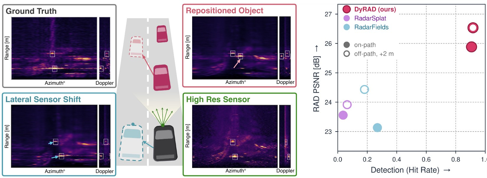
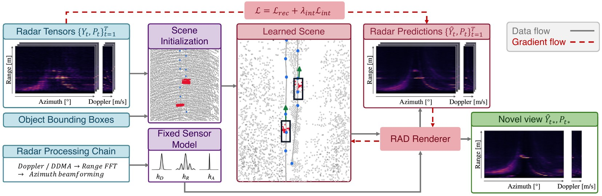
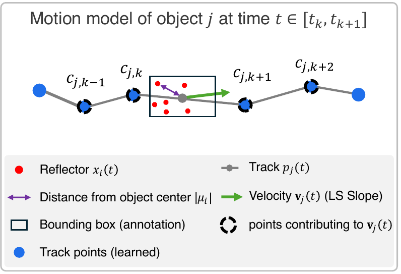
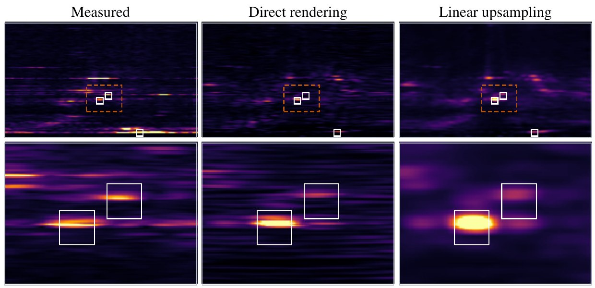

Radar Novel View Synthesis for Dynamic Driving Scenes
Under review · ICLR 2027
DyRAD reconstructs a dynamic driving scene from recorded radar and renders full range–azimuth–Doppler tensors from poses, sensors and scene layouts it never recorded.
Reconstructing dynamic driving scenes from recorded sensor data supports closed-loop evaluation of autonomous driving systems by synthesizing observations beyond the original trajectory. Unlike cameras and LiDAR, radar measures radial velocity directly through Doppler. Yet existing radar novel-view synthesis fails to exploit this capability: methods addressing dynamic scenes reconstruct only range–azimuth tensors, while methods that render Doppler assume static scenes. Moreover, because radar processing spreads each reflection across multiple bins, existing representations absorb this spread into scene geometry, causing it to render incorrectly when the viewpoint moves.
We present DyRAD, which models dynamic driving scenes using static background reflectors and motion-tracked dynamic point reflectors to render complete range–azimuth–Doppler (RAD) tensors. Reflector velocities are derived from object tracks and projected onto the line of sight, making Doppler both a rendered output and supervision for those tracks. Crucially, we render reflectors through a fixed analytic point-spread function (PSF) derived from the radar’s signal-processing chain, preventing sensor-induced spread from being baked into the scene representation. Beyond improving scene reconstruction, this separation also enables zero-shot sensor-configuration transfer, allowing the same reconstructed scene to be rendered under different radar specifications without refitting.
We evaluate DyRAD on RADIal, Boreas, and a synthetic benchmark across both on-path poses and displaced viewpoints untested by prior work. On RADIal, DyRAD recovers radar detections in 90.7% of reference-detected objects, compared with 26.9% for the strongest baseline.

Each moving object is a planar rigid track. Object j has one learned track point cj,k per training timestamp, and its reflectors keep fixed coordinates μi in the object's own frame.
The velocity comes from a least-squares slope over four neighbouring track points, and is projected onto the line of sight to give each reflector's Doppler. Doppler is therefore both a rendered output and supervision for the track.

Every clip shows all methods on the same scene at the same instant, on one brightness scale. ρ is the Pearson correlation with the ground truth for that frame. White boxes mark annotated vehicles. * RadarSplat and RadarFields predict only RA measurements; their Doppler is assigned from a static ego-motion model.

| RADIal · RAD reconstruction | RADIal · detection | Boreas · RA reconstruction | |||||||
|---|---|---|---|---|---|---|---|---|---|
| Method | PSNR ↑ | ρ ↑ | ρobj ↑ | CD [m] ↓ | F1 ↑ | Hit rate ↑ | PSNR ↑ | ρ ↑ | ρobj ↑ |
@inproceedings{dyrad2027,
title = {DyRAD: Radar Novel View Synthesis for Dynamic Driving Scenes},
author = {Anonymous},
booktitle = {Under review},
year = {2027}
}